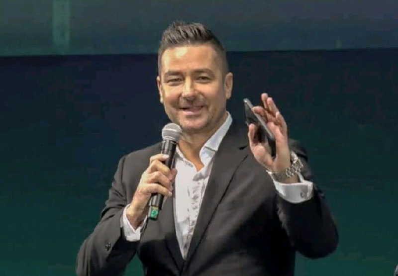

One size does not fit all when it comes to business consulting. What works for one company may not work for another, which is where our business consulting services shine. We tailor our strategies to YOUR business, considering your unique goals, challenges, and market dynamics.
Whether you need business transformation consulting, business growth consulting, executive business coaching, business operations consulting, leadership development programs, or help in other areas, we have a proven formula for success.
But don't take our word for it — read what our clients say about us:
Before the Vault Conference, Roland Kegye's network marketing team achieved $10 million in sales; one month later, his team added almost $5 million to that total! Roland says he learned so many unique strategies and was so inspired at the conference that he even upped his sales projections to $100 million over the next three years.
Before the conference, Roland believed there was no more room for improvement in his current situation. Motivated by the presentations and energy of the Vault, however, he broke through to the next level. The conference brought him clarity, speed, knowledge, and inspiration from seeing a room full of potential and what is possible at the next level.

He credits Patrick Bet-David's business transformation coaching and the community of “killers” he met at the Vault for helping him tear down his mental walls and see a bolder, brighter future.